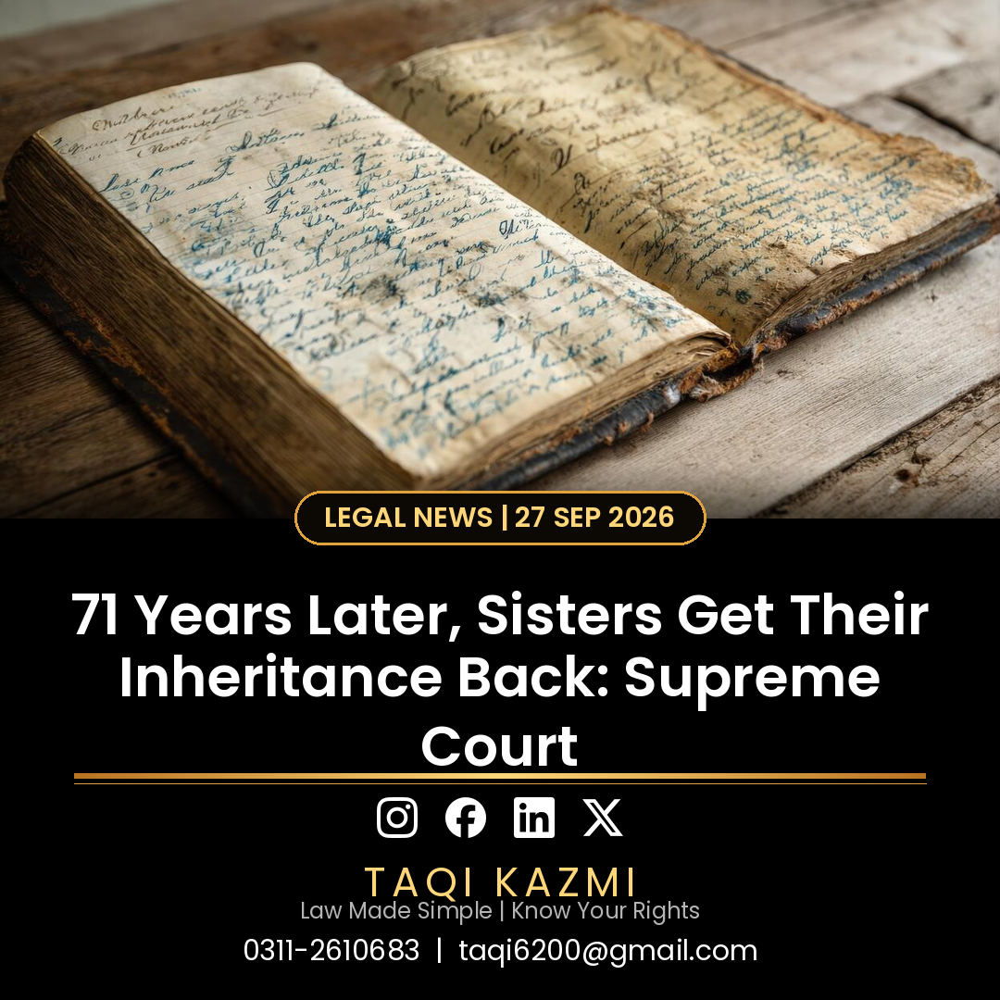

What the court decided
- A two-member bench of Justice Shahid Bilal Hassan and Justice Shakeel Ahmad set aside the trial court, the appellate court and the Lahore High Court, all of which had upheld the alleged oral gift.
- The Court declared the 17 April 1955 revenue mutation and every transaction built on it illegal and void, and ordered the revenue record to be corrected.
- The ruling is clear: inheritance is not a favour from male relatives. It is a legal and Sharia right that vests in every heir the moment the owner dies.
- Anyone claiming an oral gift must prove it with independent evidence. A mutation entry or long possession proves nothing.
The key legal point
The burden of proving an oral gift lies on the person claiming it. Revenue entries alone cannot defeat a rightful heir's share in ancestral property, no matter how much time has passed.
Urdu mein khulasa
Betiyon ka wirasat mein hissa koi riwayat ya dabao khatam nahi kar sakta, aur zabani tohfe ka dawa saboot ke baghair kuch nahi. Agar aap ke ghar mein wirasat ka masla hai to rehnumai ke liye rabta karein: 0311-2610683